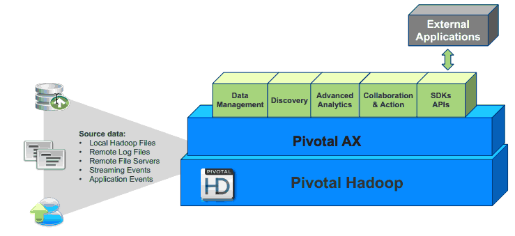

Overview of Pivotal Analytics
Pivotal AX is an on-premise analytics platform that runs on the Pivotal Cloud Foundry platform and uses a Pivotal HD deployment for data analysis. It is a software component of the Pivotal One product suite that provides business analysts with tools to analyze business data. Analysts can analyze data in real time with data coming from sources such as live application feeds, Syslog feeds, static files, Pivotal GemFire queries, Amazon S3, or HDFS. Pivotal AX requires an on-site deployment of a Pivotal HD cluster. An API is available for integration with external applications.

A Pivotal AX installation uses the following components:
- Pivotal Cloud Foundry
- VMware vSphere
- VMware ESXi
Pivotal AX Virtual Machines—a Pivotal AX installation uses a set of virtual machines that collect data, analyze data, display data visualizations, and manage the system. These virtual machines include:
- Management nodes
- Messaging nodes
- Query nodes
- Compilation nodes
- Storm
- Zabbix
Pivotal AX Web interface—a Web application used to configure the data sources for analysis and to visualize the data using charts and reports.
Pivotal HD (Hadoop). A Pivotal HD installation is required for use with Pivotal AX and includes the following components:
- HDFS—a fault tolerant distributed file system that is designed to run on commodity hardware.
- Hive—a data warehouse infrastructure that provides an interface similar to SQL on top of Hadoop.
- HBase—a distributed, column-oriented database that uses HDFS for storing data.
- Jobtracker—manages MapReduce jobs
- YARN—a framework that facilitates writing distributed processing frameworks and applications and supports MapReduce version 2.
Pivotal AX Documentation
The following documentation resources are available: